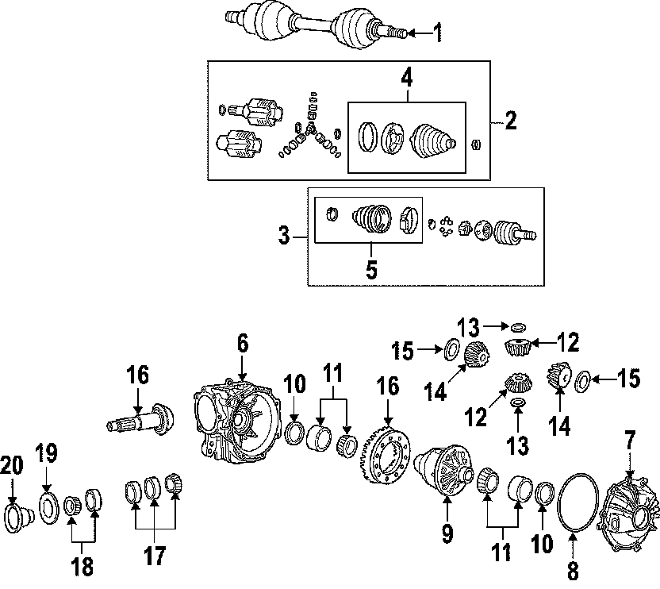
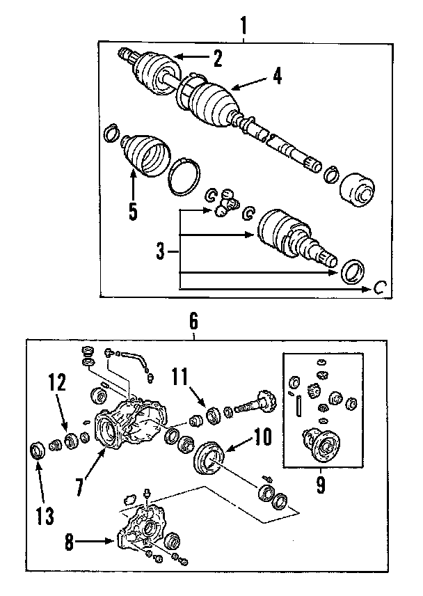

Operation CHARM
: Car repair manuals for everyone.
Home
>>
Cadillac
>>
2008
>>
SRX AWD V8-4.6L
>>
Parts and Labor
>>
Transmission and Drivetrain
>>
Drive Axles, Bearings and Joints
>>
Axle Shaft Assembly
>>
Images
Images
Front Axle:

Rear Axle:
